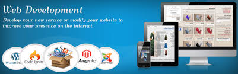

Retour à mon Porfolio cliqez sur l'image

Expériences professionnelles
Agent de Piste Aéroportuaire confirmé - 01/01/2012 - A ce jour
- Assistance avion Arrivé & Départ
- Départ / Arrivée casque Anglais et Français
- Chef équipe de 5 à 6 personnes
- Scan bagage avec SRB
- Déchargement et chargement containerisé
- Calage, balisage avion et sécurisation du périmètre de l'avion
- Placement avion
Support Proximité VIP - N2 / Admin N1
- Responsable support Wella France & VIP
- Responsable stock matériel (300 pc portables)
- Responsable - référent support technique Toshiba (fournisseurs et sous-traitants)
- Analyse et traitement des demandes des utilisateurs. évaluation des problèmes et résolution
- Gestion des incidents (tickets HP OpenView)
- Administrator Level 1 SAG Secur ID (RSA
- Création de procédures
Compétences
Systèmes
- Windows (toutes versions)
- Linux serveur, VMware, ESXi, Hyper V
Compétences Technique
- Protocoles Réseaux, TCP/IP, Lan, Wan, Switch, Pfesense
- BIND9, APACHE2 (Virtualisation Host Multi-site), POSTFIX
- Sécurité informatique
- CISCO CCNA1 - CCNA4
Site Web
- Création site Web Personnel
Formations
- 2018 Administrateur Système et Réseaux - IPREC (Niveau V)
- 2012 Assistant Piste Aéroportuaire - Camas Formation / Swissport
- 2011 Agent de Piste - Airport College WFS Roissy
- 2010 AFPS-PSC1 Attestation de Formation aux Premiers Secours - Protection Civil
- 2006 Technicien Supérieur Gestion de Ressource Informatique - Afpa Créteil (Niveau III)
- 1996 Technicien de Maintenance Micro Informatique IGS / Poly-Informatique (Niveau IV)
Langues
- Anglais: Intermédiaire
- Laos: Parlé
- Thailande: Parlé